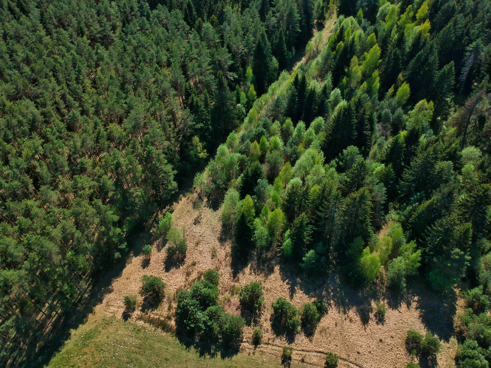

março 25, 2025 • 5A Inteligência
A busca por práticas mais sustentáveis na produção rural tem impulsionado o surgimento de instrumentos financeiros inovadores. Entre eles, a CPR Verde (Cédula de Produto Rural Verde) se destaca como uma ferramenta promissora, conectando o agronegócio à preservação ambiental.
Mas para que essa solução tenha credibilidade e gere impacto real, dois elementos são fundamentais: a certificação do projeto e seu monitoramento contínuo.
A CPR Verde é uma modalidade da Cédula de Produto Rural voltada à remuneração de serviços ecossistêmicos, como:
Ou seja, o produtor rural passa a ser recompensado não apenas pelo que produz, mas também pelo que conserva.
A certificação garante que o projeto atenda aos critérios técnicos, legais e ambientais exigidos para emissão da CPR Verde. É ela quem valida:
A certificação inicial é o primeiro passo. O monitoramento garante que os compromissos assumidos continuem sendo cumpridos ao longo do tempo. Com o uso de tecnologias como geoprocessamento, sensoriamento remoto e inteligência de dados, é possível:
Na 5A, unimos conhecimento técnico, ambiental e tecnológico para dar suporte completo à certificação e ao monitoramento de projetos de CPR Verde:
Projetos de CPR Verde bem estruturados, certificados e monitorados geram valor ambiental, reputacional e financeiro. Eles não apenas impulsionam o crédito sustentável, mas também ajudam o Brasil a manter seu protagonismo na agenda ambiental global.
🌱 Quer estruturar um projeto de CPR Verde ou garantir sua certificação com segurança?
Fale com a 5A e leve sustentabilidade com estratégia para seu negócio.